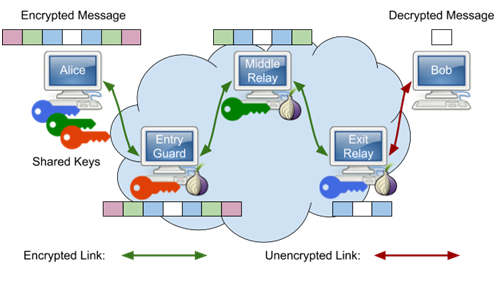
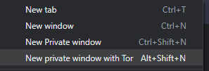
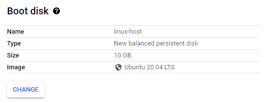
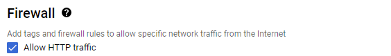
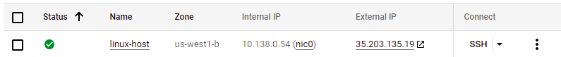
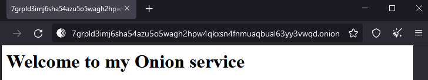

The Tor browser is distributed as a modification to the Mozilla browser and has also been integrated into the Brave browser. Tor uses layers of encryption to support anonymous network connections where no single node within the Tor network is able to identify both the source and the destination of a particular connection. The figure below shows an idealized depiction of the process.

Alice wants to communicate with Bob and uses keys from multiple nodes within the Tor network to embed the payload within layers of encryption similar to an onion. The entry guard sees the connection comes from Alice, but has no idea she is sending a message to Bob. It decrypts the outer-layer and sees that the next hop is the middle relay. The middle relay decrypts its layer and has no idea of either the source (Alice) or destination (Bob) of the connection, but sees that the next hop is the exit relay. The exit relay decrypts its layer and sees the connection is destined for Bob, but has no idea it came from Alice.
For Alice, the entry guard, middle relay, and exit relay may change over time, making it difficult to associate traffic that she has sent back to her. In summary, with Tor,
To demonstrate the use of Tor, visit the Tor browser download page at https://www.torproject.org/download/ or the Brave download page https://brave.com/download/ to download and install a Tor-enabled on your computer. Note that to use Tor within the Brave browser, you will need to ensure you open a new private window with Tor.

Tor will randomly select an exit relay to send your request to the destination web service you request. Bring up Tor and a second web browser (Firefox, Chrome, etc.) on the same machine.
ifconfig.meVisit https://ifconfig.me with both browsers.
Note the values of the X-Forwarded-For: header. Examine the documentation for it here. Perform a reverse DNS lookup on each value.
Keep both browser windows up.
ipinfo.ioThere are a variety of sites that will provide you intelligence on the IP address. One such site is https://ipinfo.io . Visit the site with both browsers.
VPNs, Tor, and on-demand computing services such as AWS and Google Cloud Platform are often used by adversaries to attack legitimate services and organizations anonymously. There are a multitude of reputation and threat intelligence services that continuously monitor malicious activity in a distributed manner, and provide information about particular endpoints, typically by their IP addresses. In this step, we'll examine the ratings of three IP addresses:
Begin by using dig or nslookup to obtain the IP address of oregonctf.org to use in this step.
IPQualityScore can detect the use of proxies and VPNs for hiding the source of activity: both legitimate and malicious. Visit the following site and enter each of the three IP addresses: https://www.ipqualityscore.com/free-ip-lookup-proxy-vpn-test
A defense-in-depth approach might require us to check multiple services since each service has different data being collected and different algorithms for determining reputation. GetIPIntel differs from the previous service in that it also attempts to identify addresses from data centers. Visit the site and enter each of the three IP addresses again: https://getipintel.net/free-proxy-vpn-tor-ip-lookup/ . Note that each lookup may take several seconds to perform.
While using the Tor browser hides the location of the client from the service it is accessing, Tor onion services do the opposite: hide the location of the destination from the client. Doing so allows services to circumvent censorship mechanisms, but onion services can also prevent law enforcement from going after and shutting down illicit web marketplaces such as Silk Road. When talking about Onion services, they are often referred to as "hidden services" or the "Dark Web" since both the client and server can't see each other's locations.
Attempt to bring up the following Onion URL up using a traditional web browser: http://danielas3rtn54uwmofdo3x2bsdifr47huasnmbgqzfrec5ubupvtpid.onion/
As returned by the browser, the DNS lookup fails. Onion URLs are cryptographic hashes of the public keys of these hidden services when they are configured.
Now, visit the site using Tor. The site has two URLs
Visit the following Onion service: http://sdolvtfhatvsysc6l34d65ymdwxcujausv7k5jk4cy5ttzhjoi6fzvyd.onion/
Some other Onions services to visit:
Onion services typically use standard web server software to run. To demonstrate this, we will set one up and access it from our Tor browser. Begin by visiting Google Cloud Platform's Compute Engine service and configuring an instance with the following:
us-west1-b zone
Allow HTTP traffic to the instance.

Create the instance. When it comes up, note its external IP address. You will be using this address in subsequent steps.

Click on the SSH button to bring up a terminal on the VM. To begin with, we will need to install additional packages for the web server we'll use (nginx) and the Tor relay that we'll use to host the onion service (tor).
sudo apt update -y sudo apt install nginx tor -y
Note that as part of installation, both the web server and Tor server are brought up.
We'll be using the nginx web server to host the content of our onion service. In doing so, we want to make sure its content is not accessible from anywhere except via Tor. We start by configuring nginx with web content that is served only from localhost connections on port 8080.
Start by creating a local directory that will serve as the document root for your site in the file system and fill in a default landing page.
sudo mkdir -p /var/www/tor
sudo bash -c 'echo "<html><body><h1>Welcome to my Onion service</h1></body
></html>" > /var/www/tor/index.html'Sites that can be served by nginx are specified in files located in /etc/nginx/sites-available and those that are active have links in /etc/nginx/sites-enabled to those files. Create the site's configuration file.
sudo nano /etc/nginx/sites-available/torserver {
listen 127.0.0.1:8080;
root /var/www/tor;
client_max_body_size 100M;
charset utf-8;
index index.html;
}Once created, we will want to enable the site.
sudo ln -s /etc/nginx/sites-available/tor /etc/nginx/sites-enabled/tor
sudo systemctl restart nginxFinally, visit the web server from the command to ensure you can access the content of the site.
curl http://localhost:8080We'll now want to connect up our nginx server to the Tor network and obtain an onion address for it. The anonymity that Tor provides with its onion service prevents the IP address of our VM from being exposed to the client. Tor is configured via a configuration file at /etc/tor/torrc. While one can configure it in any number of ways (e.g. as an exit node, an entry node, or a relay), we will instead set it up to just host a hidden server. Using the configuration below, we will set up the hidden service at /var/lib/tor/hidden_service and have Tor take incoming requests from port 80 and forward them to the nginx server on port 8080.
HiddenServiceDir /var/lib/tor/hidden_service/ HiddenServicePort 80 127.0.0.1:8080
We'll then create the directory for the hidden service and change its ownership and permissions so the Tor user can access it.
sudo mkdir /var/lib/tor/hidden_service/
sudo chown debian-tor:debian-tor /var/lib/tor/hidden_service/
sudo chmod 0700 /var/lib/tor/hidden_service/We'll then restart Tor which will automatically create the keypair, of which, the .onion address is the public key for.
sudo systemctl restart torView the .onion address using the following command. The URL is only meaningful within Tor and its name offers no clue as to its location (e.g. IP address).
sudo cat /var/lib/tor/hidden_service/hostnameCopy the URL of the .onion site. Bring up the Tor browser and visit the site.

Finally, clean up by visiting the Compute Engine console and deleting the VM.